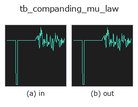

typed op• Data kinds: signal → signal
• Call: fullseye.apply(img, "tb_companding_mu_law", a=0.5, b=0.5) (2-D model = एक image + दो scalar knobs a,b∈[0,1])

*Figure synthetic 128×128 input पर सच में चलाकर मिला output है। बाईं ओर input, दाईं ओर output। Point clouds ऊपर से देखे गए scatter के रूप में (brightness = z), 1-D series line के रूप में, volumes z दिशा में maximum-intensity projection के रूप में, videos बीच के frame के रूप में, complex images amplitude के रूप में, और जो return values चित्र नहीं बन सकते वे स्वयं values के रूप में दिखाए जाते हैं।*
Knob a को बदलकर (0.1 / 0.5 / 0.9, दूसरा knob default पर):
▸ tb_companding_mu_law: knob a को बदलने का figure (docs site)
Knob b को बदलकर (0.1 / 0.5 / 0.9, दूसरा knob default पर):
▸ tb_companding_mu_law: knob b को बदलने का figure (docs site)
Stages (पहले आने वाले ops → यह op, बाएँ से क्रम में):
▸ tb_companding_mu_law: stages का figure (docs site)
दूसरी images पर भी (synthetic scene / photo / coins। ऊपर की row में inputs, नीचे की row में उनके outputs। Knobs default पर):
▸ tb_companding_mu_law: दूसरी images पर output (docs site)
mu-law companding — G.711 curve, यहाँ किसी भी 1-D signal पर उपयोग किया गया।
> नीचे का विस्तृत विवरण मूल text में है — सारांश और headings का अनुवाद हो चुका है।
Compress with F(v) = sign(v) * ln(1 + mu|v|) / ln(1 + mu) on the signal scaled to [-1, 1], quantise uniformly, expand back. The steps end up fine near zero and coarse near full scale, which is the right allocation when the interesting part of the signal is small compared with its peaks — speech, vibration, anything with a large crest factor.
This is where mu-law comes from: the image operator companding_mu_law is the same curve applied to intensity. Reporting both keeps the family honest about which dimension the technique was designed for.
Applicability — it is the crest factor that decides. Measured on a sine of amplitude *A* with one sample pinned at full scale, so the crest factor is exactly 1/A (mean square error relative to a uniform quantiser):
crest 50 4 bit 0.011 6 bit 0.014 (about 90x better)
crest 20 4 bit 0.122 6 bit 0.101
crest 6.7 4 bit 0.613 6 bit 0.616
crest 2.0 4 bit 4.22 6 bit 6.03 (several times WORSE)
So the rule is crest factor above roughly 7 — speech, vibration, impact. Below that, a plain uniform quantiser wins and mu-law actively hurts. ★Note the peak is a single sample: on random signals of the same family the advantage swung between 0.55 and 0.87 purely with the seed, because the largest excursion sets the scale. Measure the crest factor of *your* signal, do not assume it from the distribution.
Other limits: mu near 0 degenerates to uniform quantisation (that is how you check the curve is doing anything), and the curve is fixed — unlike a Lloyd-Max codebook fitted to the signal — which is the point when values must stay comparable across recordings.
Typed bridge of the 1d op companding_mu_law into the 2-D evolution registry: the same implementation, called under the op(v, a, b) convention. a drives mu (default 255) and b drives bits (default 8).
• Sample data catalog (DL URL / license) — 2-D के लिए skimage.data (BSD/public) + synthetic, 3-D के लिए real data sources (Stanford/PDS आदि) के DL URL।
• Operators का स्रोत और संदर्भ — इस op family के मूल research/methods के स्रोत।
नीचे का program सच में चलता है, यह जाँचा गया है (figure वाला ही input)। Studio की help में यह block buttons बन जाता है, जिनसे इसे वहीं load करके चलाया जा सकता है।
img_to_signal 0.50 0.50 tb_companding_mu_law 0.50 0.50
▸ यह pipeline load करें · Load करके चलाएँ
नीचे के उदाहरण मूल ledger op companding_mu_law को call करते हैं। यह bridge op वही implementation है, बस fn(v, a, b) convention के अनुसार ढाला गया है, इसलिए व्यवहार वैसा ही लागू होता है (केवल call का रूप अलग है)।
• gallery2d_gray_arith — py -3.11 examples/gallery2d_gray_arith.py
signal को input के रूप में लेते हैं)identity · tb_create_funct_1d_array · tb_smooth_funct_1d_gauss · tb_smooth_funct_1d_mean · tb_derivate_funct_1d · tb_integrate_funct_1d · tb_zero_crossings_funct_1d · tb_abs_funct_1d
typed)tb_points_to_voxel · tb_estimate_point_normals · tb_iss_keypoints · tb_project_points · tb_render_point_depth · tb_statistical_outlier_removal · tb_radius_outlier_removal · tb_voxel_grid_downsample
*Provenance: ops.py — 2D operator registry. यह per-op note tools/opdocs.py md से अपने-आप generate होता है (हाथ से edit न करें)।*
© 2026 Kazufumi Furuse — Fullseye operator documentation. Licensed under Apache-2.0.